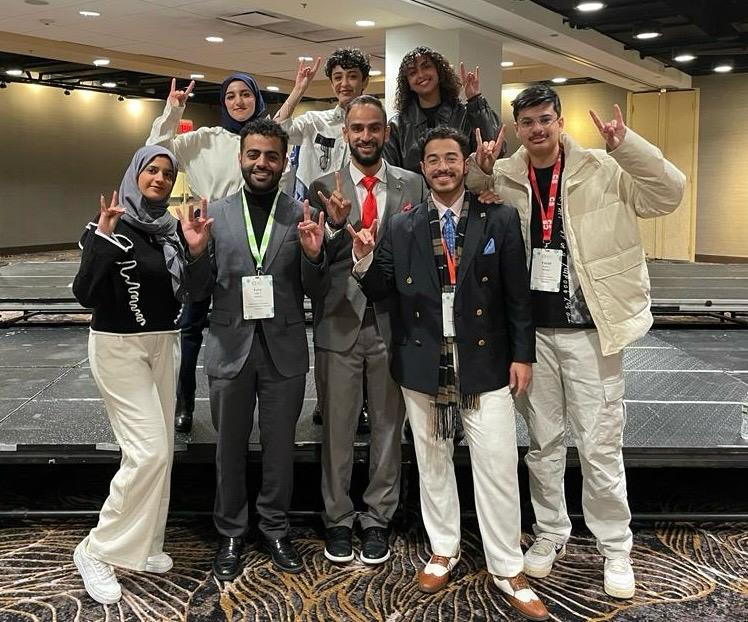
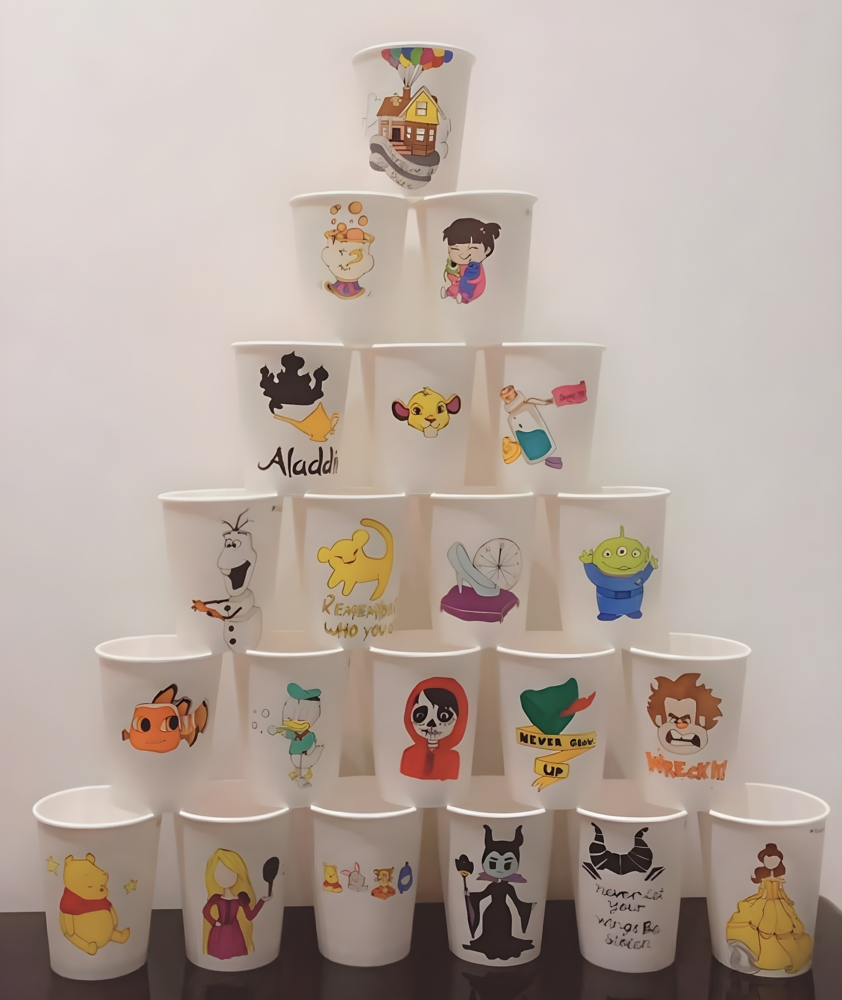

I'm an international student studying at University of Pittsburgh. Studying abroad has always been my dream and I feel so grateful for this opportinity! I worked really hard in high school to achive my goal. Luckily, I was granted the most prestigious scholarship in my country!
I took a gap year and studied in North Carolina State University. It was a unique experience where I got to meet a lot of cool people and make new friends. It was also an opportinity to do bad in university without worrying about grades. It was the perfect send off for our new adventure!

I study Computer Science. I chose my major because of my passion in coding. I was drawn to coding from movies and tv series and despite what many people say, coding gives the same vibes you see in movies! Another reason for choosing my major was my video games addiction. I love learning about the process behind making a video game and creating the illistrations and character's movements.
Imagine stepping into a fantastical world where the boundaries between reality and imagination blur into an immersive experience where every little detail feels tangibly real. This is the transformative power of 3D Animation and virtual reality, which have redefined the limits of creative expression and immersive engagement. 3D Animation, also known as three-dimensional design, is the process of creating a three-dimensional digital model of an object using three main axes: the horizontal axis (X), the vertical axis (Y), and the depth axis (Z). By manipulating these axes, designers can create intricate, lifelike models that simulate depth and perspective. This process relies on various design programs like Blender, Maya, or 3ds Max to build and animate these models. The goal is to convey ideas with a high degree of realism, enhancing both artistic expression and functional design in digital products. 3D Animation is one of the greatest technological innovations that have transformed creativity, artistic storytelling, and interactive technology, ultimately helping reshape various industries and expanding opportunities for engagement and learning.
The evolution from 2D to 3D animation marks a remarkable journey in the history of virtual storytelling. Originally, animation was confined to a two-dimensional realm where artists had to draw frame-by-frame sequences to create movements and expressions. Obviously, this process was not only time consuming but also limited the possibilities of creativity because of the massive effort put into making a short scene. When talking about magical world many people think of Disneyland as Disney has -from its earliest- set the ground to be the most inspirational company. They have always focused on breaking our thinking limitations making us believe in our dream world’s becoming true. Therefore Disney has released the first computer-animated film, Toy Story, which became a huge turning point in the animation industry. This film utilized Modern CGI (Computer-Generated Imagery) techniques. According to the New York Film Academy, “The film transformed the animation industry, showcasing the possibilities of computer animation and influencing the direction of future developments in the field of animated filmmaking.” After all these years Toy Story film remains a true animation masterpiece that have inspired many future movies.
Moreover, 3D animation transforms how people visualize the world because it provides a realistic immersive viewing experience, that makes the displayed images appear real and present in front of the person. As opposed to two-dimensional animation, 3D animation simulates depth, lighting, and texture, allowing viewers to interact with and explore complex environments tangibly and immediately. 3D animation had a great influence on expanding our creative thinking and problem-solving skills. As video games players, our biggest dream is to live inside a video game, which 3D animation made possible. Players can now see the character’s points of view and the depth of the scene making it feel like they are inside the game. This makes players more connected and emotionally invested in stories because of the interactive storytelling techniques.
One of the outstanding uses of 3D Animation is creating three-dimensional video games. Players can also be equipped with 3D glasses known as VR (Virtual Reality headsets). These glasses have look through lenses that display one or more screens that display stereoscopic images. The VR lenses show different versions of the same image in each eye which help create a 3-dimensional effect to add scene depth and realism to the displayed images. This offers a more immersive experience compared to traditional 2D animation, which enhances the user’s engagement. This glass can also be paired with consoles of different types that users can use to have better control in the game. Unlike previous years, people can now in their dream worlds and even craft it. Interestingly, this is not exclusive to games and entertainment. In industries like engineering, medicine, or training, virtual reality alongside 3D design makes a huge impact on conducting studies or planning future projects. For example, architects can now build and test their buildings safely with minimum effort. This saves time and energy and help engineer’s explore new paths and test their ideas at a much lower cost. More importantly, this reduces risks of failure and saves people’s lives!
In conclusion, 3D animation marks one of technology’s biggest innovations that has reshaped how we view and interact with the world around us. The transition from 2D to 3D animation unlocked boundless creative possibilities where storyteller’s craft realistic worlds that captivate our imagination and evoke profound emotions. Future developments promise even more revolutionary advancements, further bridging the gap between fantasy and reality. These technological innovations not only push the boundaries of what is possible, but also inspire us to dream bigger and explore new ideas which will continue to transform the world!
Audience analysis: My artifact is 3D Animation which has various applications in different fields like technology, education, and medicine. It is a tool that makes creating real-life projects easier because of its realistic visuals. So, I believe my audience are visual learners.
Drawing has always been my hobby. I love the feelings I have whenever I start drawing. Picturing things in my own way, and delivering these pictures to people is a wonderful feeling. I started drawing when I was 7 years old and learned a lot from many sources. In middle school, I bought a drawing tablet and started learning digital painting. Even though it has been a while since I drew something cool, drawing is still my fun place to be creative.

I recently started to learn playing the piano and it's really fun! During quarantine my dad tought me how to play “Bella Ciao” and it was fairly easy and very enoyable. The music it richer when you hear it from an instrument. I then started playing my favorite songs and perform them to my family. Learning piano created a special bond between me and my father and it became our common hobby.
In recent years, computers and technology have played a significant role in how we create art and visualize the world around us. One of the greatest innovations in this area is 3D animation and design, a unique form of art that enhances people’s creativity by allowing them to bring their wildest ideas to life. With the implementation of software like Blender, Maya, and Cinema 4D, 3D animation has opened up new possibilities for artists, designers, and educators, offering a vast range of tools to create detailed, lifelike characters, intricate environments, and stunning visual effects. This tool has transformed not only the entertainment industry, but also fields like architecture, engineering, advertising, and education. Whether it's creating animated films, immersive video games, or virtual simulations for training and learning, 3D animation has the potential to boost human creativity by visualizing problems, offering innovative solutions, and making abstract ideas tangible. As technology and art continue to merge, 3D animation is reshaping industries and shaping the future of creativity and innovation, making it an exciting tool for both present-day and future generations.
3D design has become a critical part of the art industry. Its credibility is supported by its widespread use by professional artists in creative industries. The most popular software are Blender, Maya, and Cinema 4D, which have developed to become essential tools for 3D artists. Blender is particularly common among beginners and independent creators due to its open-source and free software, making it the ideal tool for artists who are just starting out or those who cannot afford expensive programs. On the other hand, Maya and Cinema 4D are industry leaders trusted by major animation studios like Pixar and Disney to create high-quality character modeling and visual effects. These tools played a key role in the production of influential films like Toy Story, Frozen, and Avatar.
The entertainment world was significantly impacted by the implementation of 3D design. As opposed to 2D animation, 3D animation has changed how we experience storytelling by creating immersive worlds that are visually breathtaking and emotionally impactful. According to Power, 3D animation tools allow for the exploration of expressive narrative outputs, moving beyond hyper-realism to incorporate more artistic and emotional elements into animations (Power, 2009). By enabling artists to explore and expand their creative boundaries, these tools allow artists to bring their fantasies to life in ways that make the characters and stories more relatable to the audience.
3D animation software is highly valued for its advanced features which are essential for producing professional-level animation. The success of these tools in both independent and large-scale productions highlights the credibility and versatility of 3D animation in the art industry. Whether for independent films or major blockbusters 3D animation has proven to be an indispensable asset to creative professionals across a variety of fields.
It is also important to note that the effect of 3D animation is not confined to the entertainment industry, it has greatly boosted creativity across various fields. Another great area of its application is architecture, where 3D design tools help architects and engineers create the most complex building designs. These tools have transformed architectural design, as designers can now create building models in detail and in the most realistic way possible. Additionally, 3D simulations assist architects in understanding the relationship between buildings and their environment, leading to a proper balance between appearance and utility.
The most noticeable impact of 3D animation in architecture is the enhancement of safety in structures during construction. The 3D models help architects and engineers predict the behavior of buildings in various conditions, such as natural disasters, earthquakes, floods, or fires. 3D models assist designers in identifying potential issues and finding ways to fix them prior to construction. As Xing points out, 3D modeling has significantly reduced design time and errors, improving load distribution accuracy and material cost efficiency (Xing, 2024). This predictive modeling tool has helped prevent the construction of buildings that were likely to collapse under certain conditions, thus saving lives.
In Japan, where earthquakes are very common, millions of people lose their lives and homes due to poor construction and unbalanced designs. This issue becomes even more heartbreaking when you consider the countless families who have lost loved ones, their homes reduced to rubble in the blink of an eye. For those who survive, the emotional scars are deep and lasting homes, memories, and entire communities torn apart by disasters that could have been avoided. These tragedies are a reminder of the importance of designing structures that can stand strong against the forces of nature.
With advanced 3D modeling, we can prevent these heartbreaks, save families from grief, and protect communities from destruction. An example of its impact is the application of 3D simulations in the construction of earthquake-resistant buildings which has been of great significance in seismic zones as a way of preventing disasters. Through 3D design, it becomes easier to visualize and come up with solutions to real-life situations for which professionals develop structures.
3D animation has also boosted people’s creativity across educational fields, such as medicine. To further explain, 3D models help medical personnel view patients’ unique anatomy in new virtual ways. Surgeons use these models to plan surgeries prior to operations, making the procedures more accurate and effective. To illustrate, a study was conducted to compare the advantages of 3 dimensional animated teaching over surgical videos for teaching ophthalmic surgery. According to BMJ Journals, 3D animations lead to a better understanding of difficult surgical topics among medical students, especially for female users (Prinz et al, 2005). 3D animation tools have played a strong role in increasing surgeons' skills by enabling them to practice without the concerns of making mistakes that could harm the patient. It allows them to rehearse complex procedures in a controlled, risk-free environment, refining their techniques and increasing their confidence. This technology allows them to visualize organs, tissues, and blood vessels in intricate detail, preparing them for any challenges that may arise during surgery. As a result, this increased the quality of patient care as well as enhancing surgeon’s expertise and capabilities.
Moreover, 3D animation along with virtual reality has been applied in the treatment of psychological disorders, such as trauma or anxiety. Through the use of virtual reality simulations, patients can confront their fears and work through their feelings in a controlled environment. Thus, 3D animation contributes to the process of emotional recovery, as it enables patients to experience and deal with difficult situations in a safe way, while also allowing them to control their feelings to a certain extent.
In conclusion, by implementing 3D animations into our lives, we would be able to transform our lives in various ways. It has been seen that 3D animation has been used in numerous industries and has helped enhance creativity among people. In addition, 3D design has changed the way professionals work and how clients in industries like entertainment, architecture, and healthcare are served. Thus, as technology advances, this great tool holds a promising future filled with more impact on the development of innovation and creativity. Through the creation of new ways of artistic expression and problem-solving, 3D animation is both a tool of practical application and a source of inspiration. In a world that is becoming more and more technological, 3D animation is at the vanguard of artistic and technological development, with infinite potential for growth and improvement of people’s lives.
Prinz, A., Bolz, M., & Findl, O. (2005). Advantage of three dimensional animated teaching over traditional surgical videos for teaching ophthalmic surgery: a randomised study. The British journal of ophthalmology, 89(11), 1495–1499.
Power, P. (2009). Animated Expressions: Expressive Style in 3D Computer Graphic Narrative Animation. Animation, 4, 107 - 129.
Xing, J. (n.d.). Enhancing large-span structure design and maintenance through the synergy of CAD, BIM, and Iot-AI Technologies. Applied and Computational Engineering.